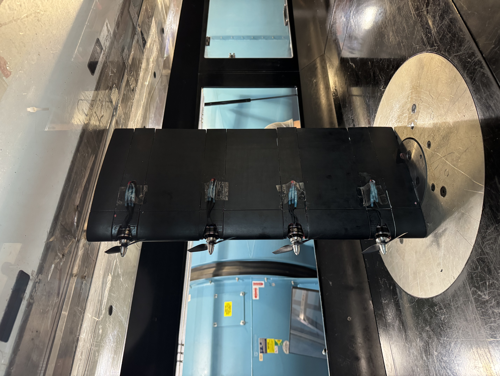
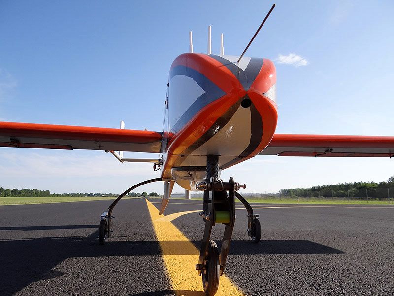
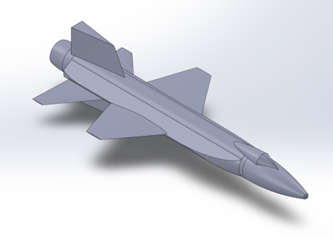
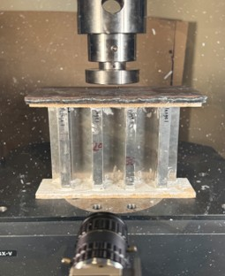
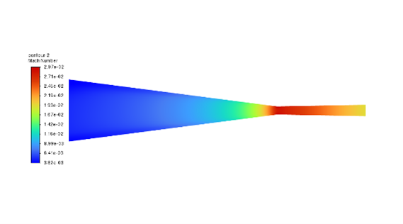

Click a project to view details, tools used, and results.

AerodynamicsDesigned, manufactured, and experimentally evaluated 16 advanced airfoil geometries using wind tunnel testing, Monte Carlo simulations, and MATLAB automation.

Autonomous SystemsLead the structural CAD and software integration of a competition UAS by designing airframe components in SolidWorks, and developing Python-based flight guidance and control automation.

Space SystemsReconstructed the X-15 hypersonic vehicle with 98% geometric accuracy and verified Mach 8 thermal-structural performance using ANSYS to validate historical design limits against modern simulation.

StructuresDesigned and manufactured stiffened aerospace panels by combining SolidWorks modeling, Abaqus FEA, and physical testing to achieve a 1.5 factor of safety with 95% correlation to UTM data.

PropulsionSimulated converging-diverging nozzle flows in ANSYS and validated performance against isentropic theory with 90% correlation while automating post-processing in MATLAB.